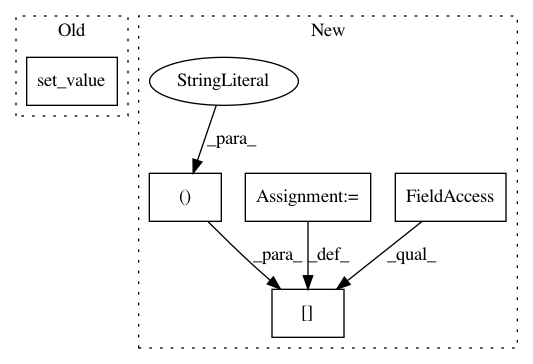

7609b7b20c2d202e969ade8d49ef3c064571a0b2,secuml/core/active_learning/queries/aladin.py,AladinQueries,_gen_queries_from_scores,#AladinQueries#,140
Before Change
families_scores[c][predicted_class_index].set_value(
query, "queried", True)
self.scores.set_value(query, "queried", True)
lr_predicted_proba_df.set_value(query, "queried", True)
// Break condition
// self.num_annotations instances have been queried
if num_annotations >= self.num_annotations:
stop = True
After Change
self.lr_class_labels == predicted_class)[0][0]
selected_df = families_scores[c][predicted_class_index]
selected_df.at[query, "queried"] = True
self.scores.at[query, "queried"] = True
lr_predicted_proba_df.at[query, "queried"] = True
// Break condition
// self.num_annotations instances have been queried
if num_annotations >= self.num_annotations:
In pattern: SUPERPATTERN
Frequency: 3
Non-data size: 5
Instances
Project Name: ANSSI-FR/SecuML
Commit Name: 7609b7b20c2d202e969ade8d49ef3c064571a0b2
Time: 2020-02-20
Author: anael.beaugnon@ssi.gouv.fr
File Name: secuml/core/active_learning/queries/aladin.py
Class Name: AladinQueries
Method Name: _gen_queries_from_scores
Project Name: pmorissette/bt
Commit Name: 2b0c4fe7d413c60e3ebf3fbc22d2fb4e8de2e338
Time: 2018-04-12
Author: jordan.platts@ahss.org
File Name: tests/test_core.py
Class Name:
Method Name: test_securitybase_allocate_commisions
Project Name: ANSSI-FR/SecuML
Commit Name: 7609b7b20c2d202e969ade8d49ef3c064571a0b2
Time: 2020-02-20
Author: anael.beaugnon@ssi.gouv.fr
File Name: secuml/core/projection/algos/pca.py
Class Name: Pca
Method Name: export_reconstruction_errors